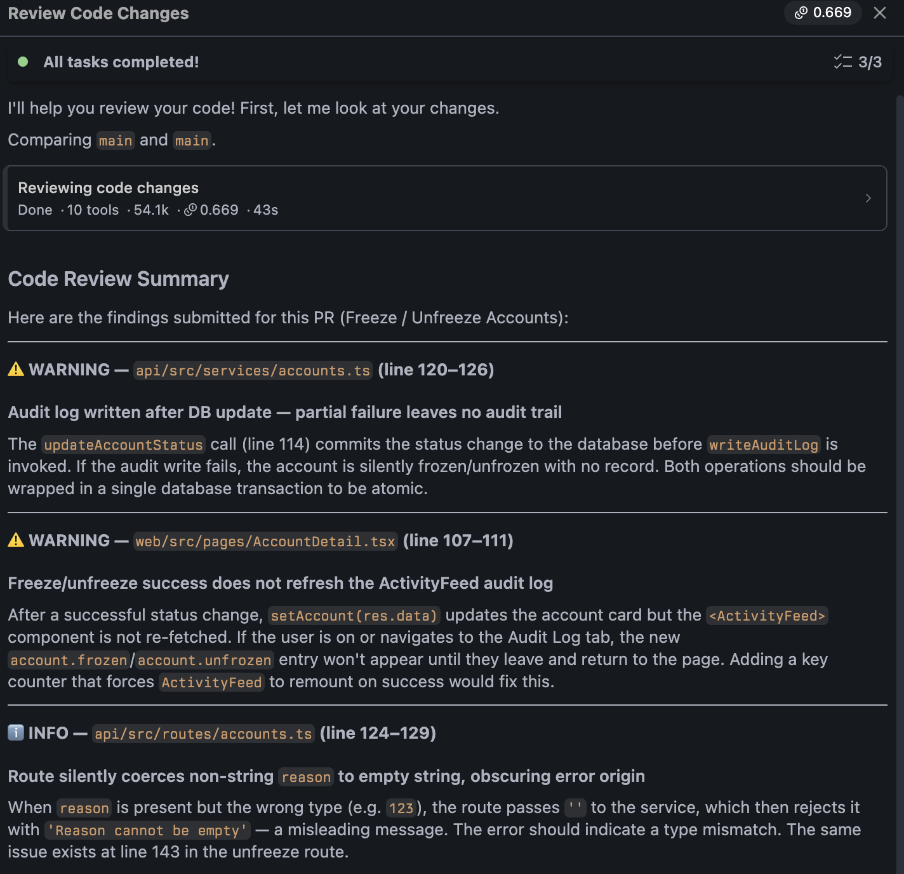
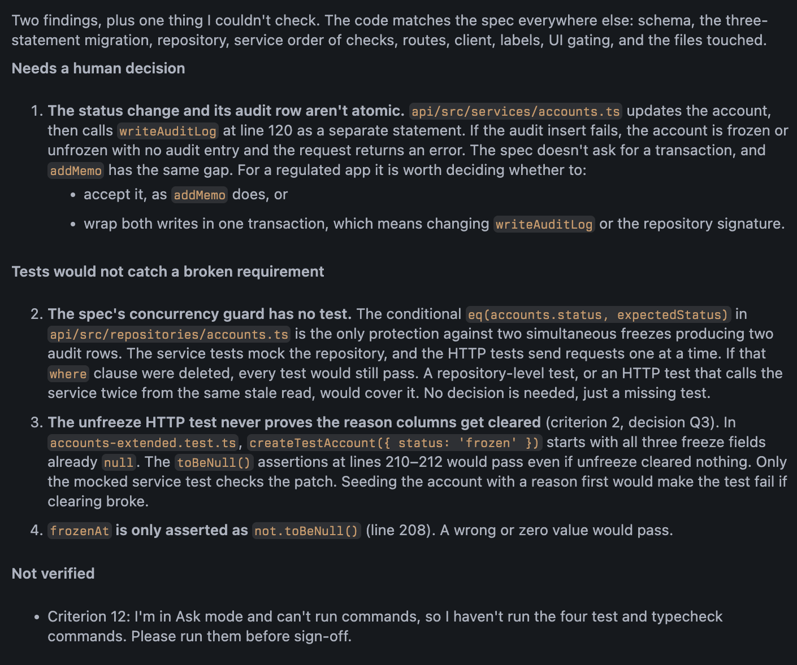

Module 3: Validation¶
Module 2 ended with every phase check green. Green means the agent built what the spec said. It doesn't mean the spec said the right thing, and it doesn't mean the code is right in ways the spec never mentioned. Validation asks the two questions green checks can't:
- Does the code match the spec? (implementation drift)
- Does the spec match the need? (spec drift)
In spec-driven development, validation validates the spec as much as the code, and the loop closes by changing the spec, not by patching around it.
| Mechanism | Reads | Catches |
|---|---|---|
/review |
the diff | code that's wrong on its own terms: bugs, conventions, weak tests |
| Independent reviewer (Ask mode) | the diff, spec.md, requirements.md |
code that doesn't match the spec; risks the spec didn't cover |
| Human gate | both reports, plus what you know about the product | whether the spec itself needs to change, and what the team will accept |
Human ownership comes back up here. The agents find; you decide.
Everything in a grey code block is pasted to Bob or the terminal verbatim. The Expect and Notice notes describe what a good run looks like.
Before you start
- Module 2's build is finished and uncommitted.
git statusshows changes underapi/andweb/, plusrequirements.mdandspec.mdas new files. - The dev server is stopped.
1. Look at the blast radius¶
In the terminal:
Then open one changed file you understand and read one new function. Not the whole diff. One function, and ask yourself whether you'd have written it that way.
Why first. Before any agent tells you what to think about the code, get your own impression of its size and shape:
- A diff much bigger than you expected is a finding by itself.
- Reading one function keeps you reading code in this module, not just reports.
Notice. Files you didn't expect. If the diff touches something the spec never named, write it down; it goes to the gate.
2. Built-in review: is the code right on its own terms?¶

In the Bob panel, type /review. Set the comparison branch to main, tick Include uncommitted changes, and start it. It runs auto-approved and takes a minute or two.
Expect. Findings in the Bob Findings tab, grouped by file: the kind of thing a careful colleague flags on a pull request. Some will be sharp, some pedantic, and one or two will be wrong.
Read them. Click Go to file on the two or three that look real. Do not click Fix with Bob, on any of them, yet.
Why not Fix with Bob. The button collapses two steps that have to stay separate:
- Is this finding right?
- Do we want this change?
This reviewer reads the diff and nothing else. It doesn't know that a duplicated check might be deliberate, or that an error message's wording came from an interview decision. Fixing before deciding puts the reviewer's opinion into your code with no record of why. You decide in step 4.
What this reviewer can and can't tell you. It's good at the first question in the table and badly placed for the second. It has never seen the spec, so it can tell you whether the code is tidy, not whether the code does what was agreed. That's what the next reviewer is for.
3. Independent review: does the code match the spec?¶
Start a new task. Set the mode to Ask. Paste:
Review the diff against @spec.md and @requirements.md: does the code match the spec, is it safe for a regulated fintech app, and would the tests fail if a requirement were broken? Skip what matches. Report what matters and mark which findings need a human decision.

Expect. Bob runs git diff itself, reads the two markdown files, then the changed files. A few minutes. Length varies: sometimes a short report, sometimes a longer one where Bob clears items as it goes and ends with a summary. Either way, look for two groups:
- Needs a human decision: the code did what the spec said and the spec didn't say enough. A failure mode the request never mentioned, a message that's correct but confusing, a field stored but never shown. Those aren't code corrections; the spec was silent on something the need required. That's spec drift.
- Tests that wouldn't catch a break: assertions that would still pass if the behavior were removed. These need no decision, just a test.
Bob may also say what it couldn't verify from Ask mode, usually that it didn't run the test commands. You did, at the end of Module 2.
If the report is long, read the end first
The findings are at the bottom. Anything above them that ends in "no issue" is Bob's working.
Why a new task. This reviewer must not have built the code. The Module 2 session knows every decision it made and will defend them; it reads its own code the way you read your own prose, seeing what it meant rather than what's there.
Why Ask mode. Ask mode cannot edit files. A reviewer that can fix things will fix things, and you're back to the Fix with Bob problem with less visibility. Making the fix impossible, rather than asking it to refrain, is the mechanism.
Why each clause.
| Clause | What it does |
|---|---|
| does the code match the spec, is it safe, would the tests fail | the three ways a feature fails review in a regulated codebase: doesn't match what was agreed, unsafe, untested in a way that lets it rot. The safety question is what lets the reviewer see past the spec. |
| skip what matches | without it the report opens with paragraphs confirming what's fine and runs out of room for what isn't |
| report what matters | the confirmed findings with file and line, so you can check one by opening one file |
| mark which findings need a human decision | separates findings with one right answer (a missing test) from tradeoffs. The gate goes through the second group only. |
Notice.
- Findings
/reviewraised that this reviewer didn't, and the reverse. Neither is the better reviewer; they hold different context, so they see different things. Module 1 was about keeping context out of a conversation; this is about choosing what to put in. - Anything flagged that the spec didn't ask for. A reviewer that only walks the spec's list misses scope creep.
- The human-decision group. Each item there is a candidate change to the spec, not to the code.
4. The human gate: does the spec match the need?¶
Before anything gets fixed, answer these three questions.
- Does the code do what we agreed? Every requirement has a phase, every phase passed its check, nothing in the diff is outside the spec. If not: which gap, and is it the code that's wrong or the spec?
- For each item marked as needing a decision: fix now, follow-up, or reject? One sentence why. Say for each fix now whether it's a code correction (the spec was right, the agent drifted) or a spec change (the spec was wrong or silent).
- Would the tests catch it breaking? If someone removed the role check tomorrow, which test goes red? If the answer is none, that's a fix before merge whatever the reviewers said.
Keep your answers to one line each. They're the input to the next step.
Why the gate is human. Both reviewers produce findings. Neither can decide what the team is willing to ship, whether a tradeoff goes the team's way, or whether a follow-up is really going to happen. That judgment doesn't delegate. This is the human ownership point of the module.
5. Close the loop through the spec¶
Don't fix the code directly. Start a new task in Agent mode with Auto-approve on, and give it the gate's answers:
Update @spec.md with these review decisions: [your one-line answers from the gate]. Amend only the affected phase and add a Review section recording each decision. Then re-implement that phase and run its checks.
Expect. Bob edits the affected phase, adds the Review section, then makes the change, runs that phase's checks, and reports.
Why through the spec.
- A fix made straight in the code leaves
spec.mddescribing something that no longer exists. The next person, or the next agent, builds from the old version. - Routing it through the spec keeps the spec true and records why it changed. You made the decision; the agent is the clerk, as in the interview.
- It's the same loop as Module 2, one more time: the spec changed, so a phase gets rebuilt and checked. A finding that overturns an interview decision goes further back, to
requirements.md, and that's the expensive path by design.
Swap diffs
If there's time, run step 3's prompt against a neighbor's working tree instead of your own. You'll read their findings more skeptically than your own.
Don't commit from the lab machine
The working tree stays uncommitted. The lab machines are wiped; copy requirements.md and spec.md out if you want to keep them.
What this module demonstrated¶
- Green checks prove the agent built the spec. Validation asks whether the code matches the spec and whether the spec matches the need; different questions, different readers.
- Two reviewers with different context find different things.
/reviewhas only the diff; the independent reviewer has the spec too. Neither replaces the other. - A reviewer that cannot fix is a reviewer you can trust to only report. Ask mode enforces it.
- The findings that matter most are the ones the spec was silent on. Those are spec problems: you decide at the gate, an agent records the decision in
spec.md, an agent rebuilds the phase, and the checks run the same way as the original.